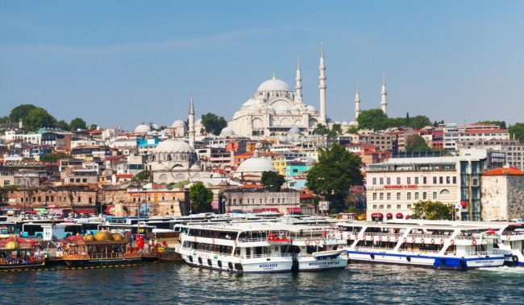
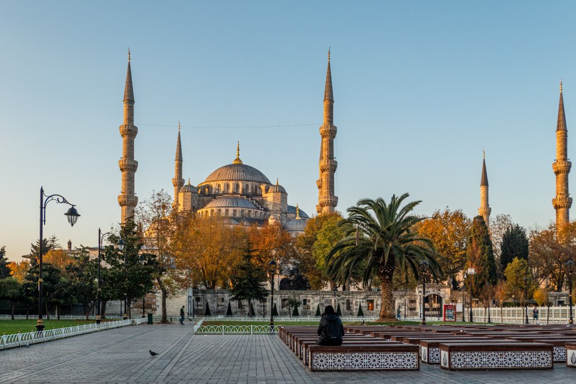
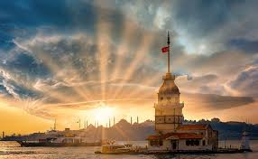
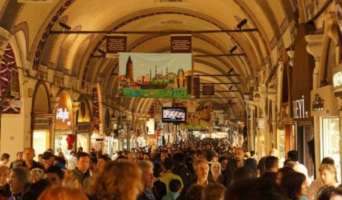

Подорож до Стамбулу - місто-мрії
 Коротко про Стамбул
Стамбул (колишній Константинополь тур. İstanbul) – найбільше місто Туреччини і її основний порт. Розташований на північному заході країни на берегах протоки Босфор, який з’єднує Чорне і Мармурове море. Стамбул — єдине місто у світі, яке розташоване відразу у двох частинах світу — Європі та Азії. Це древній мегаполіс, який протягом своєї історії був столицею трьох великих імперій: Римської, Візантійської та Османської. Все це перетворило Стамбул в один з найбільш захоплюючих міст світу з унікальним культурним та історичною спадщиною.
Стамбул географічно і культурно з’єднує Європу та Азію. Завдяки цьому він має особливий колорит і атмосферу. Протягом своєї довгої історії місто було серцем могутніх імперій, його називали “Новим Римом” і вважали центром цивілізованого світу. Пам’ятки Стамбула здатні захопити будь-якого: знаменита Айя-Софія, витончена Блакитна мечеть, Цистерна Базиліка, Палац Топкапи, Гранд-базар. Поїздка сюди подарує дивовижні враження і безліч цікавих відкриттів.
Улюблені місця
Мечеті Стамбулу
Стамбул — найбільше та, мабуть, найцікавіше місто Туреччини з великою історією та своїми традиціями. Я давно хотіла побувати у Стамбулі, й кілька років тому пообіцяла собі, що обов’язково втілю мрію в життя. Інтерес до цього міста виник одночасно з моїм інтересом до ісламу, адже іслам відіграв важливу роль в історії Османської імперії, а Стамбул був центром багатьох історичних подій.
Я хотіла спізнати місто не тільки з туристичного боку. Було цікаво потрапити в ту частину Стамбула, куди туристи потрапляють рідко та про яку їм не розповідають.
Гранд Базар
З 1460 року, коли Фатіх Султан Мехмет розпочав його будівництво, і до 1990-х Великий базар був важливим торговим місцем у житті жителів Стамбула. Великий базар першим прийшов на розум, коли потрібно було придбати спеціальний подарунок для цінної людини, коли будинок був мебльований або коли потрібно було щось, що недоступно на ринку.
Навіть сьогодні це найбільший у світі історичний критий базар з 4,000 магазинами, 500 кіосками та 21 брамою.
З роками він втратив свою популярність із відкриттям торгових центрів, виходом на ринок міжнародних брендів та зміною звичок споживання людей. Але вулиці ніколи не були порожніми, бо місця, залишені стамбульцями, вже були заповнені туристами.
